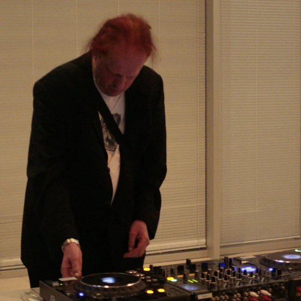
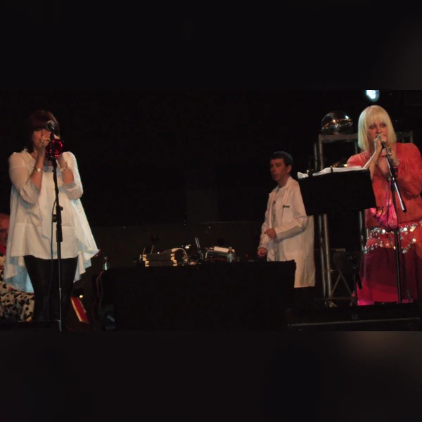
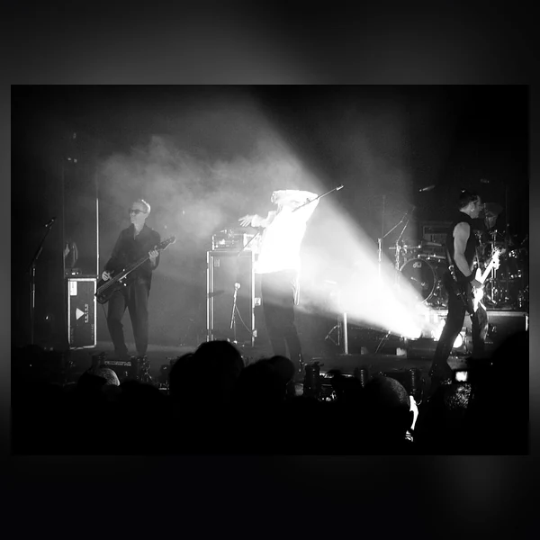
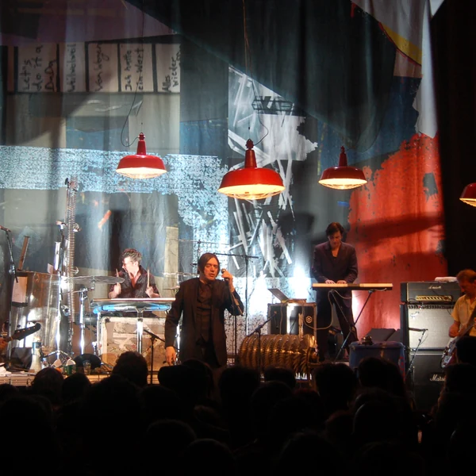
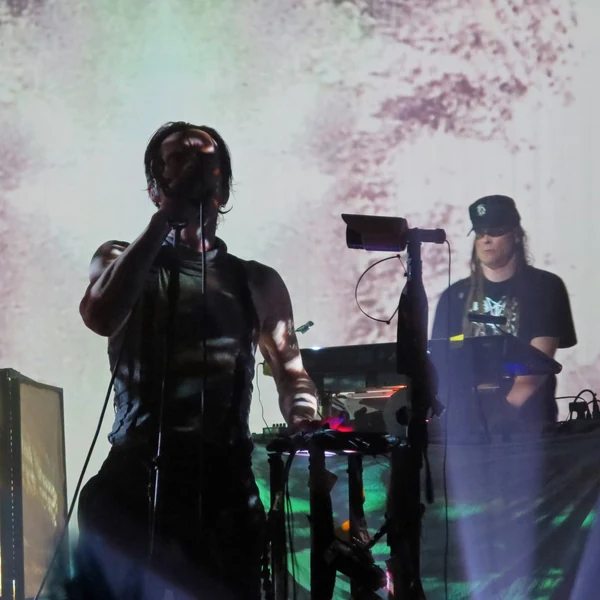
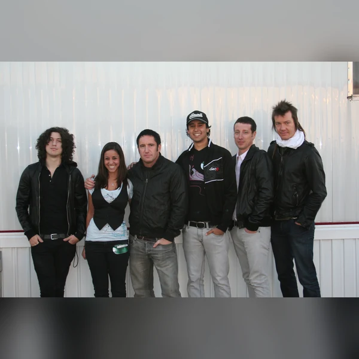

Industrial is a broad family of experimental music that emerged in the 1970s, initially drawing on electronic sound, noise and performance art. Its early practitioners were interested in what could happen when music stopped treating conventional instruments and song structures as compulsory. Recorded voices, manipulated tapes and harsh mechanical sounds could become the material of a performance. Some of this work was deliberately difficult to listen to, which was part of the point. Over time, Industrial developed into several more recognisable musical styles. Electronic Body Music introduced harder, more regular dance rhythms, while Industrial Rock brought distorted guitars into the picture. The original experimental approach did not disappear just because some of its descendants acquired a steady beat. The name now covers everything from largely abstract sound pieces to music intended for clubs. Industrial is therefore better understood through its willingness to manipulate sound and challenge expectations than through one particular tempo or instrument. It also has a long history of testing the boundary between serious social criticism and provocation for its own sake.
The name Industrial took hold during the mid-1970s, when an independent British label called Industrial Records helped give a small experimental scene a shared identity. Its slogan referred to industrial music for industrial people. The words suggested machinery, mass production and the less glamorous realities of modern working life, although they were never meant as a technical description of every sound being made. Early Industrial music was often as concerned with media and social control as it was with factories. The name also had a deliberately awkward quality. It made little effort to promise entertainment, which suited musicians questioning why recorded music was expected to behave like a consumer product. As the genre expanded, Industrial became a much less precise term. People used it for electronic dance music, distorted Rock and uncompromising noise, sometimes to the irritation of those who considered the earlier experiments more important. A label originally designed to resist easy classification had, rather predictably, become another classification.
Industrial began developing in Britain during the mid-1970s, with related experiments emerging elsewhere in Europe and North America. Artists working between music and performance art used tape recorders, electronics and unconventional sound sources to question how music was produced and presented. They were also responding to a period of economic uncertainty, political conflict and distrust of established authority. Independent labels and small performance spaces allowed these ideas to circulate without much interest from mainstream radio. During the 1980s, the music began changing in ways that divided its own audience. Some producers brought in repetitive electronic beats, helping establish Electronic Body Music and related club styles. Others combined noisy production with the familiar force of Rock guitars and drums. By the 1990s, Industrial Rock had reached much larger audiences, while the experimental underground continued separately. Digital recording later made many of the genre's methods easier to use, even outside Industrial itself. The story is not simply one of an obscure style becoming accessible. It is also a continuing disagreement about how much conventional music you can introduce before the original experiment changes its meaning.
Industrial often treats sounds that other genres might reject as central musical material. Distortion, feedback and fragments of recorded speech can be shaped into rhythms or used to interrupt them. An ordinary noise may be repeated until it becomes almost musical, while an instrument can be processed until its source is impossible to identify. Early Industrial work frequently avoids traditional melodies and predictable structures, leaving the listener to follow changes in texture or intensity instead. Later forms are often much more regular. Electronic Body Music uses insistent programmed beats and repetitive sequences that work in a club, while Industrial Rock combines electronic production with heavily distorted guitars. Vocals range from speech and chanting to aggressive singing, and some recordings have no voice at all. The shared element is usually the treatment of sound rather than a single instrument or tempo. Production is not just a way of recording the performance. It is often the performance itself. The result can be abrasive, rhythmic or surprisingly restrained, depending on which part of the Industrial family is being discussed.






Industrial grew from artistic circles that distrusted the comfortable relationship between popular entertainment, commercial media and political authority. Its early performances sometimes confronted audiences with imagery drawn from war, surveillance and social control. The intention was often to expose the disturbing things that ordinary public culture preferred to keep out of sight. But shock is a risky method of criticism. Without enough context, provocative imagery can reproduce the attitudes it is supposed to challenge, and the genre has never been free of arguments about that problem. Industrial also encouraged a practical kind of independence. Small labels, shared equipment and unusual performance spaces made experimentation possible outside the established music business. Later club scenes introduced the sound to new communities, while Industrial Rock carried some of its techniques into mainstream production. There is an obvious irony in a movement suspicious of mass culture becoming an attractive sound for commercial entertainment. Even so, Industrial helped expand the idea of what recorded music could include and made the studio itself an instrument for questioning familiar conventions.